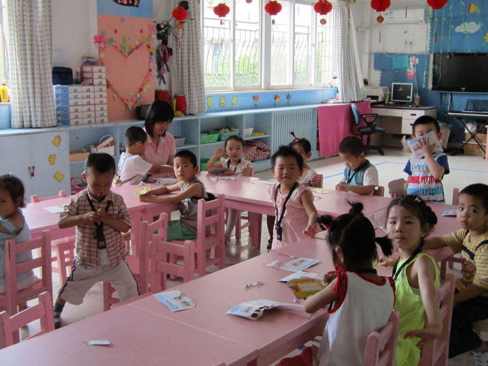
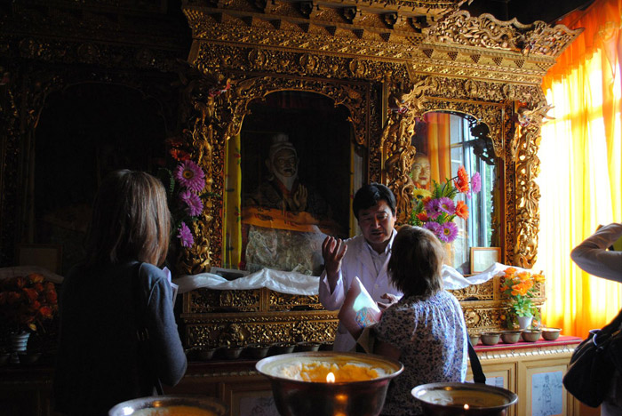
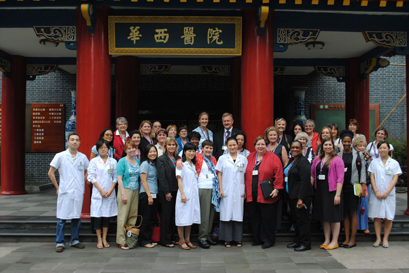
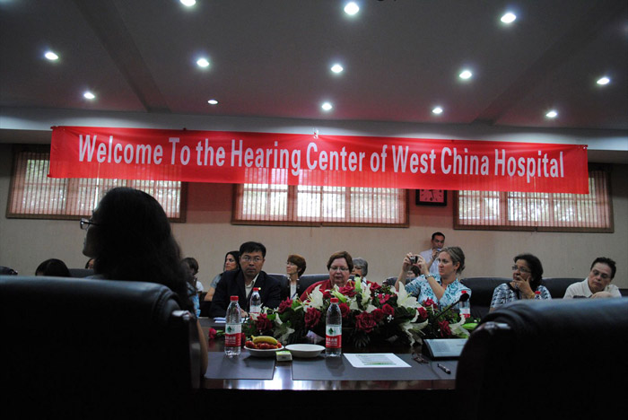

SUMMARY OF PROFSSIONAL SITES VISITED
Beijing Dongcheng District Special Education School (June 2, 2011)- Beijing
The school program includes preschool education, the nine year compulsory ecuation program and vocational education. Services for children with hearing impairments, children with developmental delays including autism are also served. Speech and Language services are provided as part of the school curriculum by special educators supplemented by parental support. There are no speech-language pathologists employed in the school program.

China Rehabilitation Research center for Deaf Children (June 3) - Beijing
The CRRCDC provides services for hearing impaired children throughout China and performs research in audiology, linguistics and psychology. The professionals at the center provide a wide variety of services to the entire region, including diagnoisti evaluations, rehabilitation, hearing aid fittings, gene studies, speech assessments and cochlear implants. There is traveling bus to offer community outreach assistance equipped with diagnostic and therapeutic devices. Each year the CRRCDC provides over 1,000 free cochlear implants to the population.
An extensive question/answer period followed the tour where common challenges were discussed. There are no standardized programs for training speech pathologists because the field is so new within the country. The Audiology programs are regulated for national certification by the Minister of Health.
Sullivan Rehabilitation Center (June 3, 2011) –Beijing
The Sullivan Rehabilitation center was named after Anne Sullivan, Helen Keller’s teacher. It is a private rehabilitation center sponsored by the government. The goal of the Sullivan center is to advocate science, harmony and health by combining a family style language approach with an outpatient medical style rehabilitation program.
In contrast to the public facility we had toured earlier which was a larger institution patterned after a school, the Sullivan Center was located in a former residential unit. It was cozy and informal in nature. We were treated to a small musical performance by the children which was very lively and enjoyable.
Both facilities are completely dedicated to their mission to serve their respective populations well.

Traditional Hospital of the Tibet Autonomous Region (June 6) – Tibet
The Traditional Hospital of Tibet Autonomous Region is the only hospital for researching traditional Tibetan medicine and astrology. It was founded by the 13th Dali Lama in 1913. When renovated there will be 500 hospital beds. They currently serve 800 outpatients each day.
We received a teaching lecture (in English) about the basic philosophy involved in Tibetan medicine by Dr. Ciwang Denpa. The tankas used for instruction and Dr. Denpa can be viewed in a picture following these informational sheets. The tankas, which are several hundred years old are based on Buddhist philosophy and careful observation of humans and their interaction with nature over time.
The hospital does not have any audiologists. There is a special school for “the mute and deaf”. Ent’s treat voice disorders, typically with herbal medicine. Autism is reported to be rare, a fact which is attributed to a more relaxed lifestyle. Stuttering is treated by bleeding and then with medicine. Stroke patients typically take “common medicine,” then Tibetan medicine. Stroke patients typically go back to their families for rehabilitation.
Diabetes is usually diagnosed with western medicine and then referred to traditional medicine for treatment. Tibetan medicine has conducted research into the use of herbal medicine for treatment of diabetes and have had good results. Cancer is common, particularly liver cancer in middle aged men due to heavy drinking. Farmers typically struggle with joint problems. Herdsmen have difficulty with hematology due to a diet with lots of meat and few vegetables. Urban Tibetans most commonly suffer from diabetes.
Trained speech-language pathologists and audiologists are not present in traditional Tibetan medicine.

School for the Blind (Braille Without Borders) June 6, 2011 – Tibet
Braille Without Borders is a non-profit organization headed by two Europeans, Sabriye Tenberken and Paul Kronenberg. There are three primary projects of Braille without Boarders: the School for the Blind, a farm to teach functional skills and an 11 month management course.
The residential school houses and educates 150 children from all over Tibet with an age range of 4 to 17. Most of the children attend the school for three to five years after which they are given an assessment. If they do well on the assessment, they return to their local schools.
The farm, located in a neighboring province, trains adults ages 17-35 in marketing agriculturally based skills. The good they produce are sold to help sustain the project.
Website:
www.braillewithoutboarders.org

Hearing Center of West China Hospital, Sichuan University (June 10, 2011) Chengdu
The Hearing Center at West China Hospital was founded in April 2004 and has been established as one of the largest and best hearing centers in mainland China. Their facilities include a hearing clinic and a hearing research lab. The team is comprised of five ENT’s who have specialized in audiology, eight audiology technicians, and four guest professors.
Most of the work done regarding hearing services is with the pediatric population. There are no speech-language pathologists at West China Hospital although the host recognized the urgent need for them and expressed their interest in hiring speech-language pathologists.
We found the staff to be very forward thinking and anxious to expand and improve the services they provide to the Chinese people.